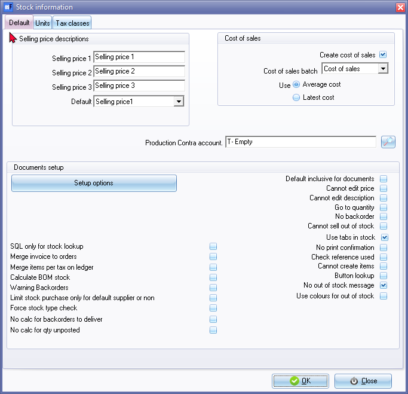

Document processing options
Setup Stock information
Document processing may be globally configured on Setup → Stock information.

The options in the Documents setup section is as follows:
- SQL only for stock lookup - To be advised.
- Merge invoice to orders - To be advised.
- Merge items per tax on ledger - To be advised.
- Calculate BOM stock – This setting is for the Bills of Materials - BOM (Production) stock item type.
- Warning Backorders -
- Limit stock purchase only for default supplier or non - To be advised.
- Force stock type check - To be advised.
- No calc for backorders to deliver - To be advised.
- No calc for qty unposted - To be advised.
- Default inclusive for documents - By default, the amounts are entered (if manually over-typed) Exclusive of VAT/GST/Sales Tax on the amount column of the document lines. To enter amounts Inclusive of VAT/GST/Sales Tax, select (tick) this option.
- Cannot edit price - By default, the prices may be entered or manually over-typed in the amount column of the document lines. To disable the editing of prices, select (tick) this option. When processing documents, cursor will bypass the Price field.
- Cannot edit description - By default, the descriptions may be entered or manually over-typed in the Description column of the document lines. To disable the editing of descriptions, select (tick) this option.
- Go to quantity – By default, the cursor will go directly to the description field. To set the cursor on document lines (after selecting the stock item) to go directly to the quantity column, select (tick) this option.
- No backorder – Select this option to disable the backorder feature when processing documents.
- Cannot sell out of stock – By default, you are allowed to sell trading stock items that is out of stock. This will indicate negative stock quantities. To block the selling of stock items that is out of stock (insufficient quantities on hand), select this option.
- Use tabs in stock - By default, this option is selected (ticked). If you deselect (remove the tick) for this option, the selected stock item (Stock items on the Default ribbon) screen's layout (interface) will change.
- No print confirmation - By default, the print confirmation message will be displayed, when you click on the OK button to finish creating or editing a document. If you click on the Yes button, the document will be printed. To turn this feature off, select (tick) this option.
- Check reference used - By default, the Check reference used field on Setup → Stock information (Default tab) is not selected (not ticked). This will not check if any matching references exists in the Your reference field of the document entry screen for any open / unposted documents for the same document type. If you activate (tick) this option, a warning message "The reference has been used in a other document! Please check your input for duplicates!" will be displayed. Click OK twice to save and exit the document entry screen.
- Cannot create items - By default, if an invalid stock code, description, etc. is typed, an confirmation screen to create a new stock item will be displayed. If you click on the Yes button, you may first create the item and then return to continue with your document. To turn this feature off, select (tick) this option.
- Button lookup - By default the Stock lookup are the default. To change this to be replaced by the Button lookup, select (tick) this option. This should support Touchscreen technology.
|
|
Groups - Images and colours The Button lookup may be configured by adding images of your product groups and setting colours (background and font) in Setup → Groups (Stock group 1). |

|
|
Product - Images The Button lookup may be configured by adding images of your products on the Images tab of Stock items (Default → Stock items on the Default ribbon). |
- No out of stock message – By default, an information message for the trading stock items (Default stock item type) is displayed when the stock item is out of stock (insufficient quantities) or when a quantity is entered in the “Qty Shipped” field of the Document entry screen. To hide this message, select (tick) this option.
- Use colours for out of stock - If this option is selected (ticked), the “Qty Shipped” field of the Document entry screen, will be displayed in a Red background and a White font colour.
Access control setup
The following settings may be globally configured on Setup → Access control - Documents tab:
- Set Tax Lookup On/Off - By default the Tax accounts lookup will be displayed - when the cursor is in the Tax field of the Document line on the Document entry screen. To deactivate this, select (tick) the “Tax Read-only” option.
|
|
Only when you re-open the Set of Books, and process documents, the Tax account lookup will not be displayed. |

- Document posting – By default only the New, Edit and Print buttons are available on the Document list screen. To add the Posting and Delete buttons, select (tick) the “Document Posting” option. It will add the following two (2) buttons underneath the Print button:
|
|
Only when you re-open the Set of Books, these buttons will be added. |
Setup Documents
Auto-post on document printing
By default Documents are updated manually in Update ledger (F3) (Default ribbon). You may configure it to be updated automatically once a document is printed. To do this select (tick) the “Auto-post on document printing” field in Setup → Documents setup (Setup ribbon).
|
|
Only when the document is printed it will be updated – unprinted documents will not be posted (updated) to the ledger. |